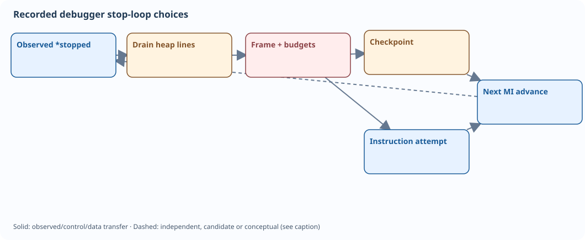
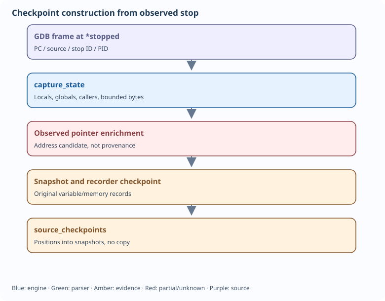
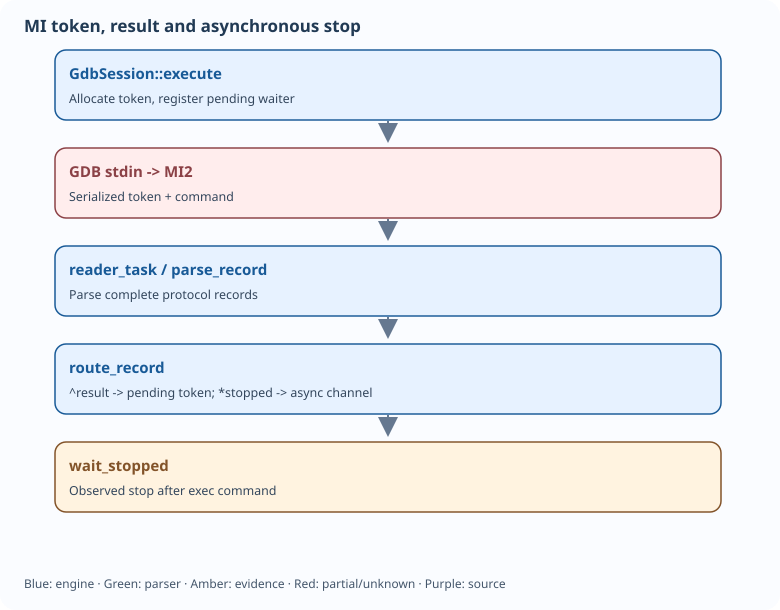

24 · GDB/MI2 controller and the recorded stop loop #
Key terms #
| Term | Meaning |
|---|---|
| Token | A number attached to a debugger command so its reply can be routed back to the command that asked. |
| Asynchronous stop | A separate GDB message announcing the program paused, possibly after a command was already acknowledged. |
>
The big picture #
The debugger subsystem does two separate jobs:
- Own one GDB process and turn its MI2 output into typed debugger facts.
- Run the stop loop that decides what to retain.
A command acknowledgement is never treated as a *stopped event.
| Piece | File |
|---|---|
| Orchestration | src/trace.rs |
| Process, token and PTY machinery | src/gdb_mi.rs |
| Syntax decoding | src/mi_parser.rs |
Part 1 · Orchestration around GDB (src/trace.rs) #
Principal signatures:
pub(crate) async fn trace_program_inner(config: TraceConfig) -> Result<DebugSessionTrace>(src/trace.rs:167)pub async fn run_gdb_phase(config, limits, classifier, binary, event_file, event_status_file, reader, timeline, notes, type_metadata) -> Result<GdbPhaseResult>(src/trace.rs:1113-1124)
Who does what #
| Function | Does |
|---|---|
trace_program_inner | Probes tools, writes the C tracker source, compiles, optionally extracts static metadata, then calls run_gdb_phase with the event/status paths (src/trace.rs:203-439) |
run_gdb_phase | Creates the Recorder, clones the UserCodeClassifier, records the injected allocator source as instrumentation_file, optionally creates a cgroup, builds GdbLaunchOptions (src/trace.rs:1125-1189) |
Startup failures #
GdbSession::launch is called at src/trace.rs:1191-1212.
| Failure | Becomes |
|---|---|
| Launch failure after the wall deadline expired | Timeout |
| Launch failure otherwise | DebuggerFailure |
| An output limit | OutputLimitReached |
Missing main breakpoint | A recorded limitation, not a fabricated source checkpoint (src/trace.rs:1226-1249) |
The stop loop #
The loop starts at src/trace.rs:1371. Each iteration follows a strict evidence order:
| # | Action | Reference |
|---|---|---|
| 1 | Increment stop_id; check command and terminal conditions | |
| 2 | Drain EventFileReader::read_new | src/trace.rs:1387-1405 |
| 3 | Mark transport damage | |
| 4 | Ingest rows into HeapTimeline | |
| 5 | Journal newly observed events with Recorder::allocations(..., stop_id) | |
| 6 | Only then classify an exit, signal, user-code stop or non-user frame |
Why heap events come first: allocation events logged before this stop must be known before the snapshot is taken.
| Case | Handling |
|---|---|
| Fatal signals | Capture state and a crash report (src/trace.rs:1441-1518) |
| Resource vs benign signals | Distinguished by classify_signal (src/trace.rs:2031-2063) |
| Nonterminal limits | Break to cleanup and a gap |
| Normal exit / crash | Separate terminal branches (src/trace.rs:1954-2024) |
After termination, a final read_new preserves destructor and exit-handler events (src/trace.rs:1977-1991). Then finish_phase, debugger counters, profiling categories and recorder.finish() produce GdbPhaseResult (src/trace.rs:1991-2024). If multiple threads were observed, the recorder is truncated to selected-thread-only coverage.
Part 2 · Session types and launch (src/gdb_mi.rs) #
Principal types #
| Type | Location | Owns |
|---|---|---|
GdbSession | :270-318 | The child process, stdin, shared routing state, async receiver, activation map, caches |
Shared | :117-138 | Pending oneshot waiters, stream accumulation, program buffer, EOF flag, module epoch |
StoppedInfo | :139-164 | The typed asynchronous stop |
GdbLaunchOptions | :165-178 | Binary, cwd, args, env, limits |
MiCommandResponse | :179-221 | The tokened record plus stream text |
CheckpointReads | :222-269 | The per-stop byte-read reuse map |
Launching GDB #
Signature: pub async fn launch(opts: &GdbLaunchOptions) -> Result<GdbSession> (src/gdb_mi.rs:389-512).
- Refuses cancelled or expired sessions.
- Creates a PTY (a pseudo-terminal, so the inferior's output can be captured) and enables subreaper ownership.
- Starts
gdb --nx --quiet --interpreter=mi2 <binary>with stdin/stdout piped and stderr null (:396-423). - GDB gets its own process group and
kill_on_drop(true). No inferior rlimits are installed on GDB itself (:411-416). - The reader task and PTY task are spawned before session configuration (
:446-450).
Configuration commands sent at launch (:483-505) #
| Command | Why |
|---|---|
-gdb-set pagination off, confirm off | No interactive prompts |
debuginfod enabled off | No network symbol fetching |
mi-async on, non-stop off | Asynchronous stops, all threads stop together |
style enabled off | Plain output |
may-call-functions off | GDB won't call functions in the inferior |
auto-load off | No auto-loaded scripts |
| Set the inferior TTY; optionally pass program arguments |
A configuration failure kills the session rather than returning a half-configured debugger. The inferior inherits C_TRACE_EVENT_FILE and C_TRACE_EVENT_STATUS_FILE from run_gdb_phase (src/trace.rs:1176-1187).
Part 3 · Command tokens and asynchronous stops #
execute #
pub async fn execute(&mut self, command: &str) -> Result<MiCommandResponse> (src/gdb_mi.rs:533-621)
- Checks cancellation, poison, deadline and command cap.
- Allocates
next_token. - Registers a oneshot in
Shared.pending. - Clears stale stream text.
- Writes
"{token}{command}\n". - Waits only for that token's result.
wait_stopped #
pub async fn wait_stopped(&mut self, timeout: Duration) -> Result<StoppedInfo> (:624-671)
- Loops over the asynchronous channel and returns only
MiRecord::Exec { class: "stopped" }. - Records
selected_thread, handles notifications such asgdb-eof, and buffers unrelated async records up to 4,096 (:624-670). StoppedInfo::is_exit,is_signal,valueanderror_messageclassify the record (:139-191).
Reader and routing #
| Component | Behavior | Location |
|---|---|---|
reader_task | 16 MiB line bound; EOF fails every pending command and emits gdb-eof | src/gdb_mi.rs:2302-2338 |
handle_line | Ignores blank lines and GDB prompts; sends malformed lines to the bounded console log | :2340-2372 |
route_record | Sends tokened ^ results to the matching waiter; routes async records to the async channel; tracks module/thread/inferior notifications; treats console/log stream text as diagnostics | :2374-2445 |
| PTY reader | Owns the master fd, appends inferior output to ProgramBuffer, notifies waiters when the output cap is first exceeded | :2447-2484 |
Part 4 · Frame and variable capture #
Types #
| Type | Location | Role |
|---|---|---|
UserCodeClassifier | src/gdb_mi.rs:1550-1559 | Distinguishes instrumentation runtime, user code, system library and unknown frames |
CaptureOptions | :1698-1717 | Variable/read/aggregate budgets, optional DWARF ObservationTypes, caller-frame limits, the transient-stop optimization |
CapturedState | :1740-1749 | Owns frames, variables, caller frames, memory usage and errors |
capture_state (src/gdb_mi.rs:1840-2227) #
pub async fn capture_state(session, opts, reads) -> Result<CapturedState>
| Step | What it does | Reference |
|---|---|---|
| 1 | Handles the derived-chain transient stop | :1847-1862 |
| 2 | Otherwise runs -stack-list-frames 0 200, parses bounded frames, computes an activation path oldest-to-youngest | :1864-1910 |
| 3 | A truncated chain clears activation continuity instead of reusing sliding prefixes | :1889-1895 |
| 4 | Non-user frames return after frame/activation bookkeeping | :1911-1913 |
For user frames, it then:
- executes
-stack-list-variables --all-values, - computes duplicate-name counts over the full list, and probes lexical symbols for the selected cap (
:1914-1947), - keeps duplicate lexical declarations as separate variables with activation/scoped identities. An unresolved collision becomes
unresolved:..., not a guessed value (:1981-2051), - otherwise uses fresh probe address/size/target data, falling back to
&name,sizeof(name)or consolewhatis(:2054-2127).
Variable identity is static:<scope>:<name> or activation:<id>:<scope>:<name> (:2129-2171).
prepare_variable_memory preserves GDB's runtime extent and picks aggregate vs scalar read limits (:1719-1736). The actual bytes are read by recorder::capture_variable_memory (src/recorder.rs:45-185).
Caller frames #
capture_caller (src/gdb_mi.rs:1753-1834) never changes GDB's selected frame or thread, records per-caller errors, and assigns separate activation IDs. capture_or_empty in trace.rs keeps a stop even if capture fails (src/trace.rs:2164-2175).
Part 5 · Memory, globals, shutdown and failure #
| Function | Behavior | Location |
|---|---|---|
evaluate | Runs -data-evaluate-expression | src/gdb_mi.rs:1104-1118 |
read_memory_bytes_partial | Validates address/range, returns empty for size zero, runs -data-read-memory-bytes, parses a contiguous prefix with an error | :1136-1179 |
parse_memory_read | Combines contiguous segments in address order but never bridges holes (tests at :3330-3390) | :1415-1497 |
capture_global (recorder.rs) | Proves static storage for qualified names when possible, evaluates the symbol, and caches only file-qualified globals within a module epoch | src/recorder.rs:512-647 |
shutdown | Tries -gdb-exit, waits up to 3 seconds, kills the group on failure, aborts reader tasks, reaps | src/gdb_mi.rs:1199-1216 |
kill | The forced path |
The module epoch advances when library-loaded/unloaded notifications arrive (src/gdb_mi.rs:2418-2421), which invalidates cached globals.
Tests and limits #
src/gdb_mi.rs tests cover: token/async separation, late results, malformed records, bounded frames, recursive caller shadowing, partial memory reads, budget exhaustion, output cap and module epoch (:2494-3732). The MI parser has independent stream/result tests (src/mi_parser.rs:699-1043).
These prove implementation branches, not that every C execution reaches every branch. No DWARF location expression is evaluated here; static metadata only qualifies observations.
See MI2 parser, recorder, stack/memory and failure walkthrough.
Diagram notes #
| Diagram | What it shows |
|---|---|
| Stop-loop choices  | Heap ingestion precedes capture; exit, signal, user-code and non-user frames follow different branches. |
| Checkpoint construction  | A retained frame plus bounded variable/byte capture become one snapshot and source-checkpoint index. |
| MI command lifecycle  | Tokened results and asynchronous stops are separate channels. |